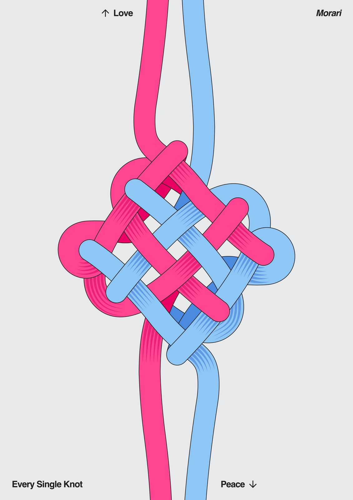

14 / 14.jpg'}))">
Platform
00
모라리
Morari
윤여진
@dbsduwlso5환승역에서 여러 노선이 교차하는 모습이 선이 얽히고 풀리는 매듭과 닮아 있었다. 정체성을 아직 확정짓지 못하는 심리적 유예 상태, '모라토리엄'을 한국적 어감의 '모라리'로 재해석하고, 사랑과 평화라는 상반된 방향을 향한 화살표는 방황 속에서도 끝내 붙들고 있는 감정의 축을 상징한다. 불확실함조차 하나의 견고한 매듭으로 완성될 수 있음을 전하고자 한다.